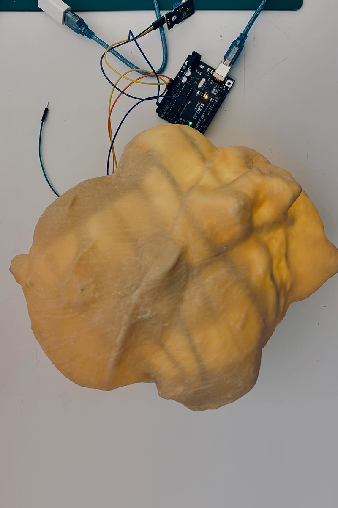
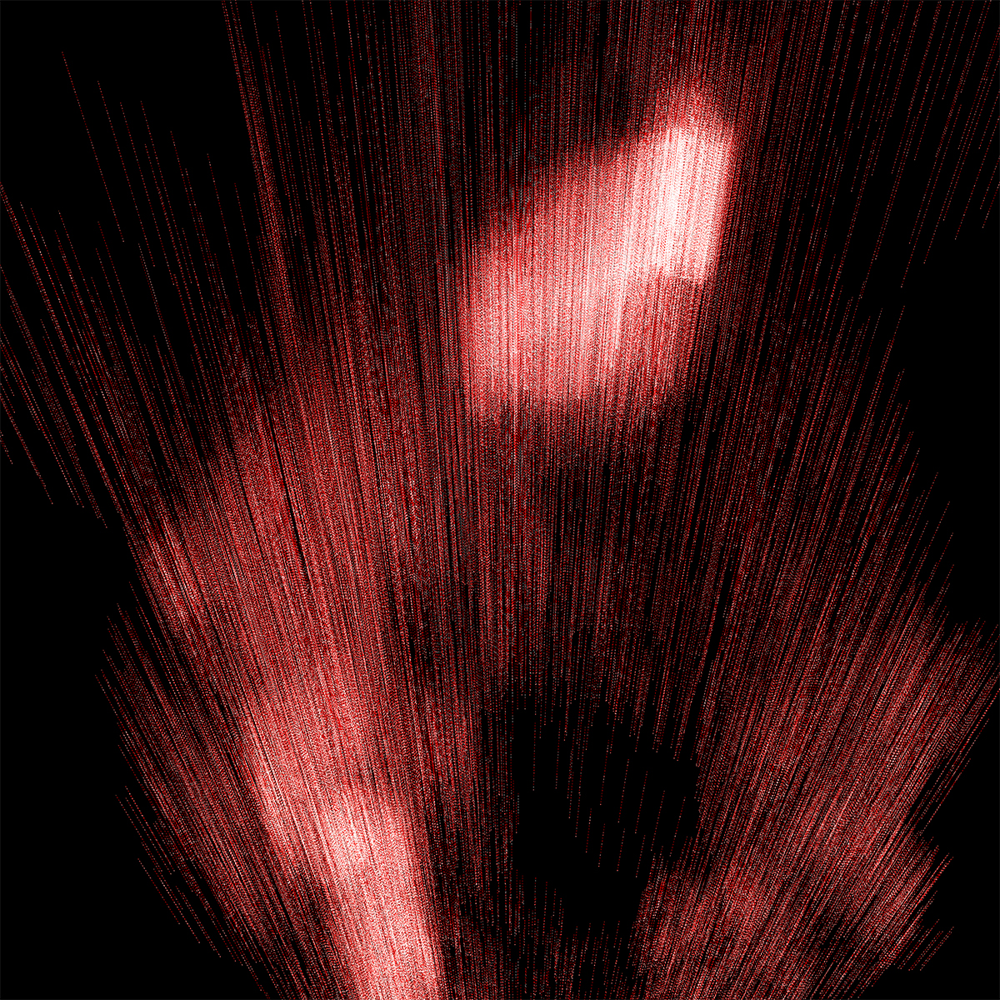
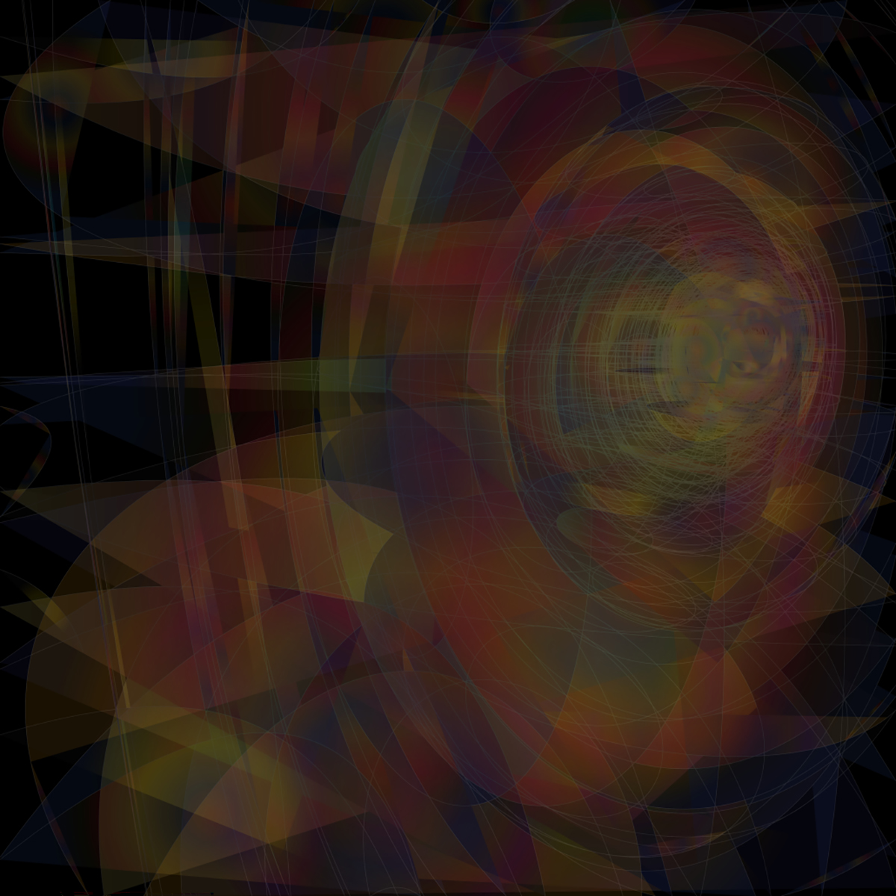
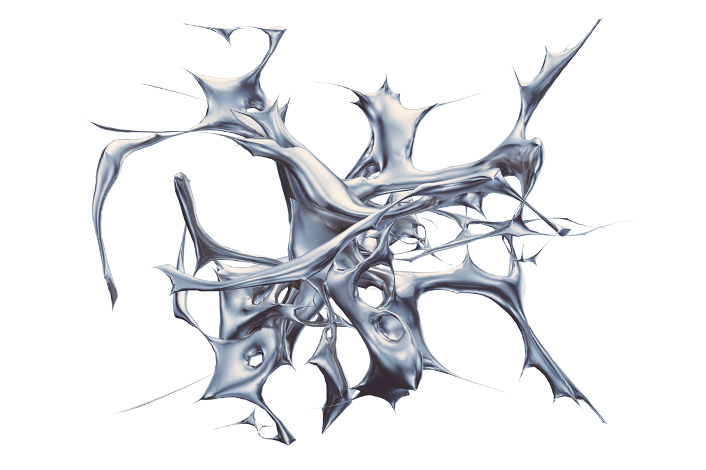
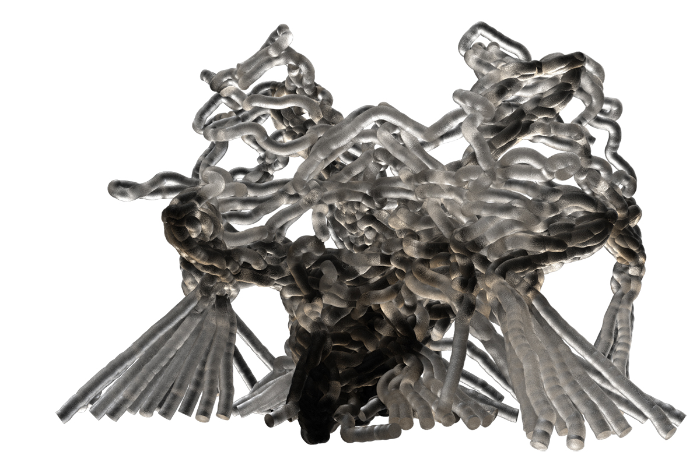
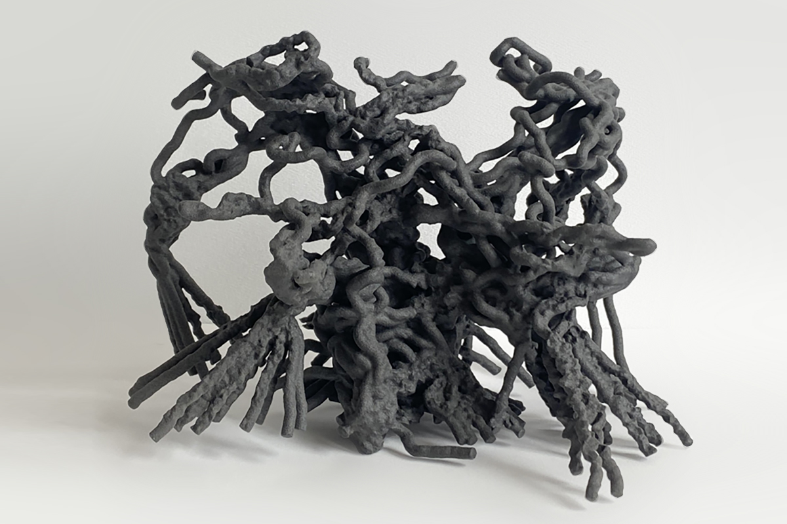
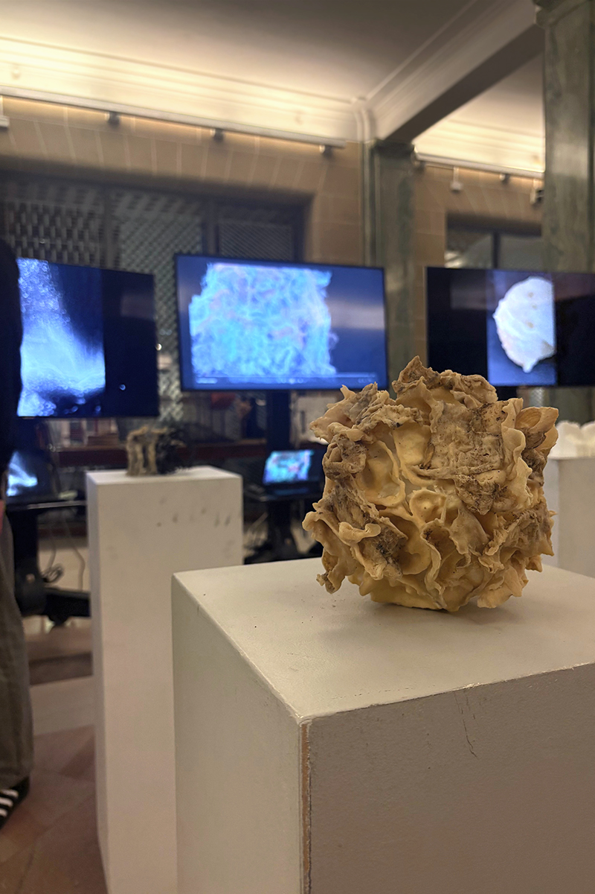

During this seminar, students learn a hybrid work flow using living organisms, inert media, digital technology, and electronic circuits. In the first phase, they grow and scan fungi in petri dishes. In phase two, you sculpt and scale their scans to create 3D prints, from which you pull surface casts. They evaluate your surfaces to design and build substructural skeletons, which they render animatronic and responsive using microcontrollers.
We chart unscripted processes and territories, allowing ourselves to linger on the unfamiliar. We are not here to seek solutions: rather, we understand that expert knowledge, classification, and desire for mastery and control have created planetary devastation, the ruins of which we now inhabit. We wander into a foggy unfamiliar terrain, and our motive is not to understand all of its symbols or coordinates—but to make sense of its atmosphere, to learn to swim.





